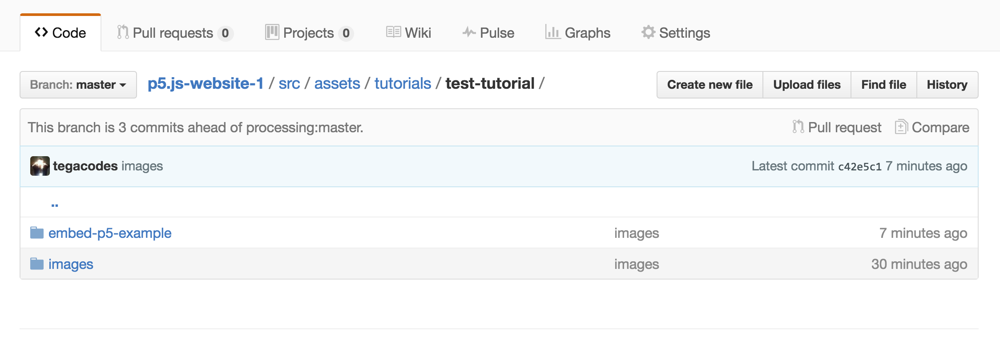

p5.jsチュートリアル投稿ガイド
教育者、寄稿者、一般のエンスージアストにp5jsチュートリアルの投稿をお願いしています。 p5jsプロジェクトは、クリエイティブ・コーディングとオープンソース開発を多様なコミュニティによりアクセスしやすくし、開発プロセスのあらゆる側面に関するチュートリアルを公開することに興奮しています。 これまでの教材には、p5の学習ガイド、プログラミング技法、オープンソースプロジェクトへの貢献方法などが含まれています。
新しい書かれたチュートリアルの投稿を歓迎し、このガイドでは提案、準備、投稿の手順を説明します。
始め方:
- 提案されたトピックがすでにカバーされていないことを確認してください。ここに作業中のスプレッドシートがあります それが進行中のチュートリアルとしてリストされている場合、既存の作業に追加して公開の準備を進めることができるかもしれませんので、お気軽にお問い合わせください。
- トピックがまだカバーされておらず、進行中としてリストされていない場合は、提案する内容について数文を書いて、その説明をeducation@p5js.orgまでメールしてください。
p5jsチュートリアルをオンラインで公開するための準備方法:
チュートリアルが公開の準備が整ったら、p5jsウェブサイト用にコンテンツを準備するために、以下の手順に従ってください。
チュートリアルのコンテンツをtutorial-name.hbsファイルとして、この基本構造で準備します 。このファイルに示されているように、以下に示すヘッダーが含まれている必要があります:
チュートリアルが含まれるフォルダは、p5jsサイトの「tutorials」フォルダに配置されます。index.hbsというファイルは、p5.jsチュートリアルのランディングページであり、 test-tutorial.hbsファイルはテストチュートリアルです。
すべてのコンテンツは以下に配置してください: <section > </section> ページ上のタグに、<h1>タグや<h2>タグ、<p>パラグラフタグによって定義されるフォーマットとともに、テストチュートリアルページで示されているように行ってください。
チュートリアルに画像が含まれる場合、それらはp5サイトのアセットフォルダに配置され、下に示すように、src/assets/learn/test-tutorial/imagesの場所に配置されます。

ページのhtmlでコードを正しくフォーマットするには、次のタグを使用してください:
<pre><code class="language-javascript">
Your code here!
</code></pre>
p5.jsスケッチの埋め込み
p5jsを使うことで、アニメーション付き、インタラクティブ、または編集可能なコード例を使ってプログラミング概念を説明するチュートリアルを作成できます。 例はp5.jsスケッチとして準備し、チュートリアルに以下の2つの方法で埋め込むことができます。
- 例が編集可能である場合、p5jsサイトのリファレンスページのように、p5jsウィジェットを使ってhtmlページにp5スケッチを埋め込む必要があります。このガイドに従って、ウィジェットを使ってp5jsスケッチを埋め込む方法を確認してください。Toolnessこのガイドは、次の方が執筆しています テストチュートリアルページで実際に動作を確認できます。
- 例がアニメーションやインタラクティブであるが、編集不可である場合は、p5.jsスケッチを下記の説明に従ってページにiframeとして埋め込む必要があります。
iframeを使ってp5スケッチを埋め込む
iframeは、他のページを探索できるウィンドウのようなもので、ページの残りの部分からサンドボックス化されています。 この場合、p5.jsスケッチが含まれるindex.htmlへのウィンドウになります。

p5スケッチをサイトの/src/assets/learnフォルダに、スケッチの名前でラベル付けされたフォルダに入れます。 スクリーンショットに示すように、これはiframeでリンクされたすべての画像とp5スケッチが格納される場所です。
p5の例が含まれるサブフォルダには、sketch.jsファイルとスケッチ用のembed.htmlファイルが必要です。

embed.htmlファイルにサイトのp5ライブラリへの正しいパスが設定されていることを確認してください。 ファイル構造が上記と同じであれば、p5.jsライブラリへのパスは "../../../js/p5.min.js" となります。
次に、チュートリアルのコンテンツが含まれる.hbsファイルにp5jsのindexファイルをiframeとして埋め込むことができます。 iframeの埋め込みコードは以下のようになります:
<iframe src="http://p5js.org/assets/learn/tes-tutorial/embed.html" width="600" height="400">
</iframe>
iframeのスタイリング（これは直接投稿に入れることも、スタイルシートに入れることもできます）:
<style> iframe{ border: none; } </style>
ここで、ネイキッドスケッチが実行されているのを見ることができます:
http://staging.p5js.org/assets/learn/test-tutorial/embed.htmlそして、以下のコードを使用してp5サイトに埋め込まれています:
http://staging.p5js.org/learn/test-tutorial.html注意すべき点は、iframeのサイズを手動で設定する必要があるため、標準サイズのものが最適です。
また、p5.jsライブラリファイルへのリンクは、チュートリアルのすべてのコンテンツがある.epsページからは行われません。 代わりに、スケッチをレンダリングするhtmlページ（この場合は、embed.htmlと呼ばれます）に配置されます。
p5.jsスケッチを埋め込む方法についての詳細は、こちらから。
仕上げ
チュートリアルの執筆が終わり、コンテンツが承認されたら、p5.jsウェブサイトのリポジトリをフォークし、 上記のようにコンテンツを準備して、p5.jsウェブサイトのリポジトリにプルリクエストを出して、あなたの貢献を公開できるようにしましょう！
ありがとうございます！